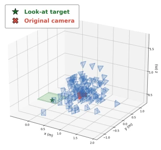

This paper applies a "3D Gaussian Band-Aid" to frozen VLA models, attempting to solve view shift issues without retraining. The approach is clever, decomposing the large problem into local completion, saving 4M parameters indeed. However, the "locality" assumption is somewhat of a gamble; if the camera actually falls or rotates 90 degrees, this method likely cannot recover. Moreover, it runs entirely in simulation, and whether it can withstand real-world calibration errors and depth noise remains uncertain. Nevertheless, for teams unwilling to retrain large models, this is indeed a cost-saving plug-and-play solution, much lighter than view synthesis models involving millions of parameters. It opens a lightweight new path for VLA robustness research; although boundary conditions are somewhat restrictive, it excels in practicality.
VLA models perform excellently on benchmarks such as LIBERO but heavily depend on camera configurations during training [17]. In actual deployment, minor camera displacement can cause success rates to drop from 90% to 10%. Existing solutions either involve large-scale fine-tuning leading to catastrophic forgetting, or rely on complex generative models like SPARTN [43] or AnyCamVLA [10], incurring high computational overhead. The authors point out that in most practical scenarios, camera perturbation is local (Locality), where most pixel geometry is recoverable, requiring only occlusion region completion. Therefore, rather than modifying policy parameters, it is preferable to perform lightweight adaptation in the observation space, avoiding the risks and costs associated with retraining. This aligns better with engineering deployment logic than simply piling up computational resources, while preserving the generalization capability of the original policy.
The overall workflow inserts a 3D Gaussian normalizer before the frozen VLA policy. Inputs include source RGB images, depth maps, and camera poses. The core innovation lies in leveraging the "locality" assumption, simplifying novel view synthesis to an occlusion completion problem at depth discontinuities. Most visible pixels are directly mapped to the canonical view via geometric back-projection without learning. Only the narrow disocclusion bands exposed due to view changes use a 4M parameter U-Net to predict 14-dimensional Gaussian attributes (position residual, scale, orientation, opacity, color residual). These Gaussian points synthesize images via a differentiable renderer at canonical poses. Compared to generic NVS models, this module reduces parameter count by 42 times, requires no scene optimization, and trains directly end-to-end, with the loss function adopting a combination of L1 and SSIM. Training requires only 5 hours, and it possesses zero-shot transfer capability on unseen tasks, demonstrating the effectiveness of observation space adaptation.
Tested on four task sets in LIBERO, comparing against no normalization and forward warp baselines. A single checkpoint significantly improves success rates on four policies (e.g., XVLA, OpenVLA), with XVLA recovering from 1.4% to 81.0%. It is effective for perturbation ranges from 5cm to 200cm, but performance declines under large rotations. Ablation studies show 4M parameters are sufficient, with depth error tolerance of approximately 3cm/3 degrees. The main limitations lie in reliance on calibrated depth and verification only in simulation environments; real-world deployment requires solving depth estimation and calibration noise issues, and it cannot currently be directly deployed on real robots. Additionally, error accumulation is minimal in long-horizon tasks, demonstrating the benefit of local completion for long-term planning.

Figure 1: Visualization of the random- ized camera distribution.